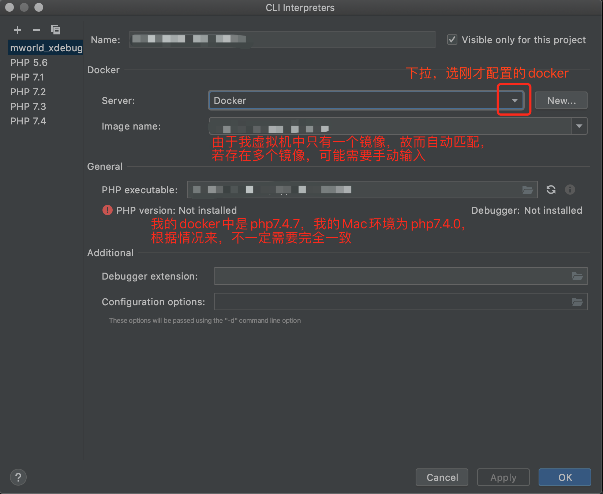

环境说明
本机Mac，安装PHPstorm，借助xdebug，远程调试位于VMware虚拟机(Ubuntu 14.04)中的Docker容器。
为什么要写这么复杂呢，因为如果你不需要在docker外面套VMware的虚拟机，可以直接从 虚拟机与Docker Remote API的配置 开始阅读，不需要docker的话，可以直接从 (在docker中)安装xdebug 开始阅读（PHPstorm的配置需要根据情况修改）~
VMware通过桥接网络，使得Ubuntu虚拟机与Mac本机位于同一网段，互相能ping通。
- Mac IP:
192.168.0.105 - Ubuntu配置静态IP:
192.168.0.200 - 将Docker容器内的80端口映射为容器外的12345端口
- Docker Remote API使用虚拟机的2375端口
附 Ubuntu 16.04 配置静态IP的配置文件（ /etc/network/interfaces ）内容：
|
|
其中 ens33 可能会根据环境不同而不同，可以使用 ifconfig 查看，是 ens33 就填 ens33 ，是 en0 就填 en0 ：
虚拟机与Docker Remote API的配置
|
|
测试是否成功开启Docker Remote API，在Mac本机的终端上测试（IP记得换成自己的）：
|
|
配置docker中的环境变量
需要配置两组环境变量：
PHP_IDE_CONFIGserverName：IDE的配置名，先起个名字，具体配置我们在下面说
XDEBUG_CONFIGremote_host192.168.0.105remote_port9101
docker run
|
|
docker-compose
docker-compose.yml:
|
|
(在docker中)安装xdebug
（在docker容器中）依次执行：
|
|
建议如下几步按xdebug官网的说明来进行：
|
|
php.ini配置及说明：
|
|
然后把xdebug.so和php.ini复制到docker容器外：
|
|
修改dockerfile，把xdebug.so和php.ini复制到相应位置，然后重新build和run。
PHPstorm中的配置
PHPstorm借助Docker Remote API操作虚拟机中的Docker：

下面这个图的image name说明可以看下下个图：


这个server name填写上面Docker环境变量中serverName对应的值，我这里就是cytotest。
根据自己的情况配置路径映射：

根据自己情况选：
至此PHPstorm的配置结束。
开始debug
切到PHPstorm，在代码右侧行号左键单击，即可在该行下断点。下好断点后，选第二个小虫子这个：
这时候PHPstorm会自动用默认浏览器打开刚才配置的start url，我们先不管，先点一下第四个小电话：
让小电话变成这个样子：
这个时候再去浏览器刷新一下，如果配置成功，则会在断点出停下来，并跳回PHPstorm的页面：
开始你的调试之旅吧~
如有错误，敬请指正，感谢~